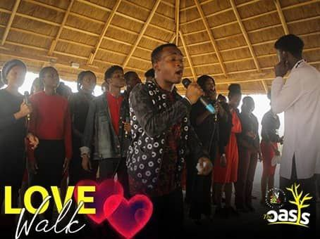

The Legacy Choir was formed by students from the Benson Idahosa University choir, whose departments were moved to the Legacy Campus in the 2019/2020 academic year.
The name "Legacy Choir" became popular among students on the campus during the second year of the choir's existence.
The choir held it's very first concert at the time (The Love Theory, 2021) and in the subsequent year (Symphony, 2022) and is at the verge of hosting another this year.
Okiemute Udi, Chibuzor Dimpka, Marvelous Iredia, and Emmanuella Ogun have all served as music directors for the Legacy Choir at various times between the years 2019 and 2023. Merci David is the choir's current music director. Each music director has brought their own unique style and contributions to the choir, making it the vibrant and dynamic group that it is today.
The choir has faced multiple challenges, one of which is the fact that when the members finally start working well together, there is often a separation due to graduation or the arrival of new students. It is as if the choir has to start from scratch every academic year. However, the choir has been able to maintain quality in its performances by preparing leaders for succession in a timely manner.
